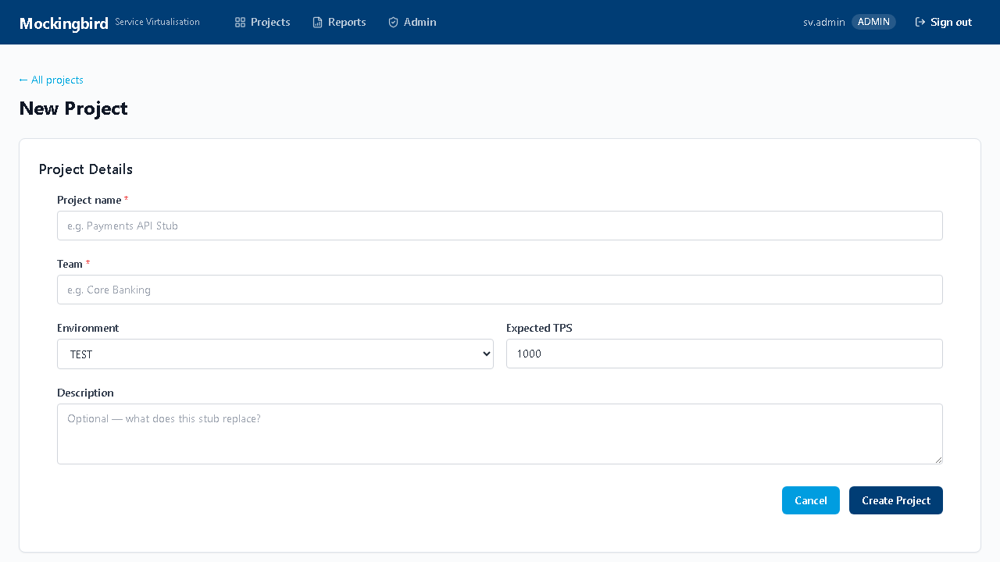
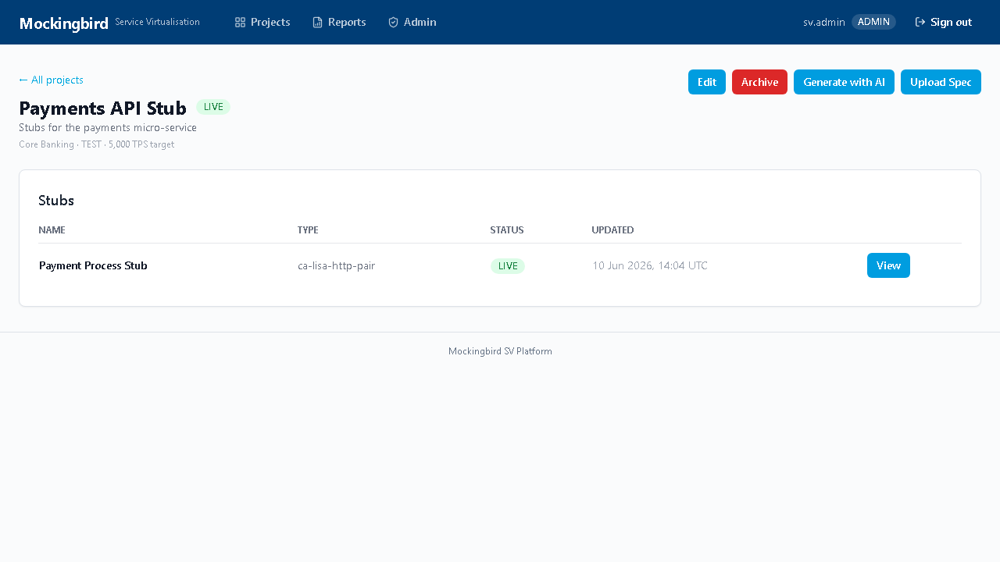
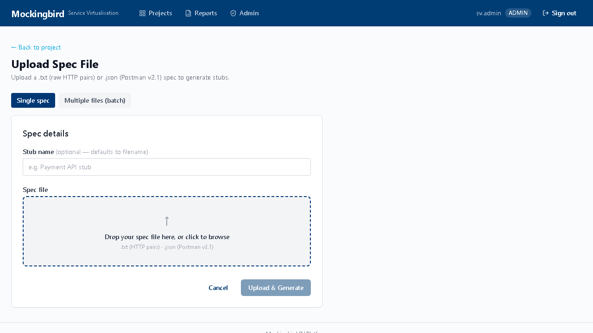
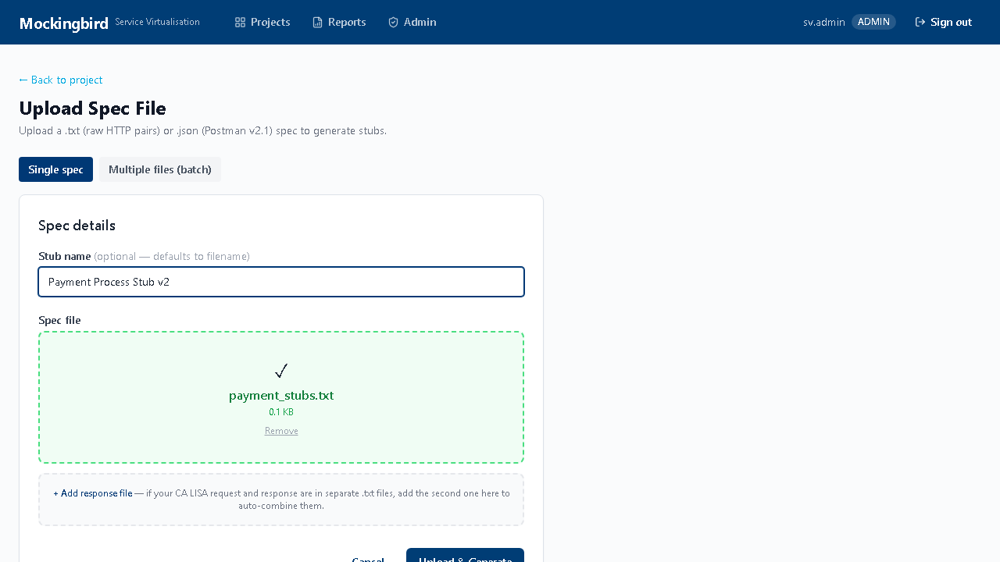
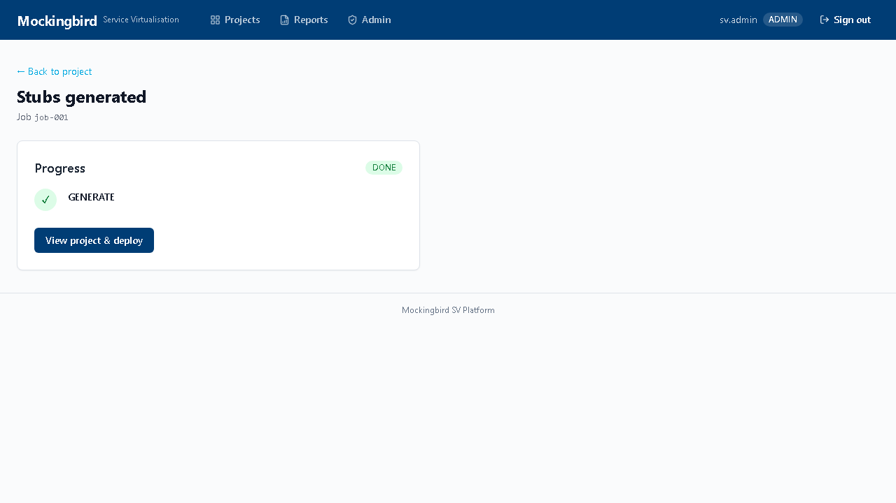

Mockingbird — Master Guide
Everything needed to go from a fresh checkout to a live, deployed stub: what the platform does, how to run it on your own machine, how to test a generated stub before trusting it, and how the automated AWS deployment actually works.
What Mockingbird can do
Multi-format upload
Raw HTTP .txt pairs, Postman v2.1, OpenAPI/Swagger, Kafka JSON, IBM MQ JSON, AsyncAPI — auto-detected, no format flag needed.
Batch upload
Upload many files in one action — each becomes its own independently deployable stub.
Multi-scenario matching
Different responses per request body, header, or query param — including 4xx/5xx fault paths.
Stateful sequences
Multi-step flows (login → fetch → logout) where each call's response depends on prior steps.
Dynamic data
Handlebars templates echo request fields, generate UUIDs/timestamps into responses.
Fault injection
Fixed, random, or progressive delays; dropped/partial responses for resilience testing.
AI-assisted generation
Describe an API in plain English — Claude drafts an OpenAPI spec you can review before creating stubs.
10,000+ TPS
Spring Boot + Netty + WireMock as an embedded library, not a standalone process.
Live metrics
Real-time TPS/latency/error-rate charts over WebSocket once a stub is deployed.
Reports
PDF, Excel, and PowerPoint usage reports generated per deployment.
Suspend / redeploy
Terminate the EC2 instance to stop paying for it; redeploy later in ~4 minutes with no re-upload.
Role-based access
ADMIN / SV_TEAM / VIEWER roles gate who can create, deploy, and administer.
For the full architecture behind these — including which deployment paths are fully built versus still aspirational — see the Architecture Reference ↗.
Prerequisites
| Tool | Version | Why |
|---|---|---|
| Python | 3.11+ | Parser and platform services |
| Node.js | 22+ | auth-service, notification-service, portal build |
| Java | 21 | Running a downloaded stub project directly with Maven |
| Git | any | Cloning the repository |
| Docker + Compose | latest | Optional — only if you run stubs/platform via containers instead of natively |
Local setup
One script does everything — creates Python virtual environments, installs all packages, creates the local database, and installs Node dependencies.
- Clone the repo
cd C:\ git clone https://github.com/ScriptSavant1/SVDemo-MockingBird.git Workspace\Mockingbird cd C:\Workspace\Mockingbird - Run setup (3–5 minutes first time)
.\setup.ps1 - Start all services — opens 4 PowerShell windows (auth, project, ingestion, portal)
.\start-dev.ps1 - Seed the admin account (first time only)
.\scripts\seed-users.ps1
- Clone the repo
cd ~ git clone https://github.com/ScriptSavant1/SVDemo-MockingBird.git mockingbird cd mockingbird - Run setup — installs system packages via
dnf, needssudochmod +x setup.sh ./setup.sh - Start all services — runs in the background, logs to
logs/./start-dev.sh - Seed the admin account (first time only)
bash scripts/seed-users.sh
curl http://localhost:3001/health
curl http://localhost:8001/health
curl http://localhost:8003/health{"status":"ok", ...}. Full troubleshooting (port
conflicts, missing packages, blank portal screen) is in
LOCAL_DEVELOPMENT.md ↗.
First login
Open http://localhost:3000 and sign in with the account seed-users created:
| Username | Password | Role |
|---|---|---|
sv.admin | Admin@2026! | ADMIN — full access |
sv.user | User@2026! | SV_TEAM — create/upload/deploy, no admin panel |


Portal walkthrough
1 — Create a project
Click New Project, fill in name / team / environment / expected TPS, and create.


2 — Upload a spec file
Open the project, click Upload Spec. Choose Single spec for one file (or a request+response pair), or Multiple files (batch) to upload many files at once — each becomes its own stub, generated in parallel, with per-file progress.


3 — Parsing and generation happen automatically
Uploading immediately queues parsing and generation — you land on a job status page that polls until the stub project is built. No further action is needed here.

4 — Admin: manage users and see the audit trail


Test a stub locally before trusting it
This is the recommended workflow: prove the generated stub behaves correctly on your own machine before spending AWS budget on it.
- On the project page, once a stub says READY with a generated
badge, click Download Stub Project. You get a complete, runnable
Spring Boot project —
pom.xml,Dockerfile, Java source, and the WireMock mappings already baked in. - Unzip it, then run it directly with Maven:
or via Docker if you'd rather not install Java 21 locally:cd stub-engine mvn spring-boot:rundocker build -t my-stub . docker run -p 8080:8080 my-stub - Hit it like any real API —
curl, Postman, or your application under test pointed athttp://localhost:8080— and confirm the responses, status codes, and scenario matching behave the way you expect. - Satisfied? Go back to the portal and click Deploy to put the same stub on AWS. Not satisfied? Fix the source spec and re-upload — nothing was deployed yet, so there's nothing to clean up.
Deploy to AWS — fully automated once you click it
Clicking Deploy is the one deliberate manual step in the whole pipeline — provisioning billable infrastructure is a decision a person makes. Once clicked, everything after it runs without intervention:
- GitLab CI builds the stub's Docker image via Kaniko and pushes it to the GitLab Container Registry.
- Terraform provisions a c6i.2xlarge EC2 instance (8 vCPU, 16GB — sized for 10K+ TPS) in Mockingbird's AWS account.
- Health checks poll the instance until the Spring Boot app responds, then the deployment flips to LIVE.
- You get a URL and a per-deployment API key back in the portal — both shown on the deployment page.
Typical time from click to live: about 4 minutes, per the platform's own target.
Screenshots captured from the running portal against the current build. If the UI looks different from these images, the app has moved on since this was written — trust the running app over this document.